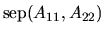

Next: Error Bounds for the
Up: Further Details: Error Bounds
Previous: Balancing and Conditioning
Contents
Index
Computing s and 
To explain s and , we need to
introduce
the spectral projector P [94,76], and the
separation of two matrices
A and B,
[94,98].
We may assume the matrix A is in Schur form, because reducing it
to this form does not change the values of s and .
Consider a cluster of
eigenvalues, counting multiplicities.
Further assume the n-by-n matrix A is
where the eigenvalues of the m-by-m matrix
A11 are exactly those in which we are
interested. In practice, if the eigenvalues on the diagonal of A
are in the wrong order, routine xTREXC
can be used to put the desired ones in the upper left corner
as shown.
We define the spectral projector, or simply projector P belonging
to the eigenvalues of A11 as
where R satisfies the system of linear equations
Equation (4.3) is called a Sylvester equation.
Given the Schur form (4.1), we solve equation
(4.3) for R using the subroutine xTRSYL.
We can now define s for the eigenvalues of A11:
In practice we do not use this expression since |R|2 is hard to
compute. Instead we use the more easily computed underestimate
which can underestimate the true value of s by no more than a factor
.
This underestimation makes our error bounds more conservative.
This approximation of s is called RCONDE in xGEEVX and xGEESX.
The separation

of the matrices A11 and
A22 is defined as the smallest singular value of the linear
map in (4.3) which takes X to
A11X - XA22, i.e.,
This formulation lets us estimate
using the condition estimator
xLACON [59,62,63], which estimates the norm of
a linear operator
given the ability to compute Tx and
TTx quickly for arbitrary x.
In our case, multiplying an
arbitrary vector by T
means solving the Sylvester equation (4.3)
with an arbitrary right hand side using xTRSYL, and multiplying by
TT means solving the same equation with A11 replaced by
A11T and A22 replaced by A22T. Solving either equation
costs at most O(n3) operations, or as few as O(n2) if .
Since the true value of
is |T|2 but we use |T|1,
our estimate of
may differ from the true value by as much as
.
This approximation to
is called
RCONDV by xGEEVX and xGEESX.
Another formulation which in principle permits an exact evaluation of
is
 |
(4.7) |
where
is the Kronecker product of X and Y.
This method is
generally impractical, however, because the matrix whose smallest singular
value we need is m(n-m) dimensional, which can be as large as
n2/4. Thus we would require as much as O( n4 ) extra workspace and
O(n6) operations, much more than the estimation method of the last
paragraph.
The expression
measures the ``separation'' of
the spectra
of A11 and A22 in the following sense. It is zero if and only if
A11 and A22 have a common eigenvalue, and small if there is a small
perturbation of either one that makes them have a common eigenvalue. If
A11 and A22 are both Hermitian matrices, then
is just the gap, or minimum distance between an eigenvalue of A11 and an
eigenvalue of A22. On the other hand, if A11 and A22 are
non-Hermitian,
may be much smaller than
this gap.
Next: Error Bounds for the
Up: Further Details: Error Bounds
Previous: Balancing and Conditioning
Contents
Index
Susan Blackford
1999-10-01